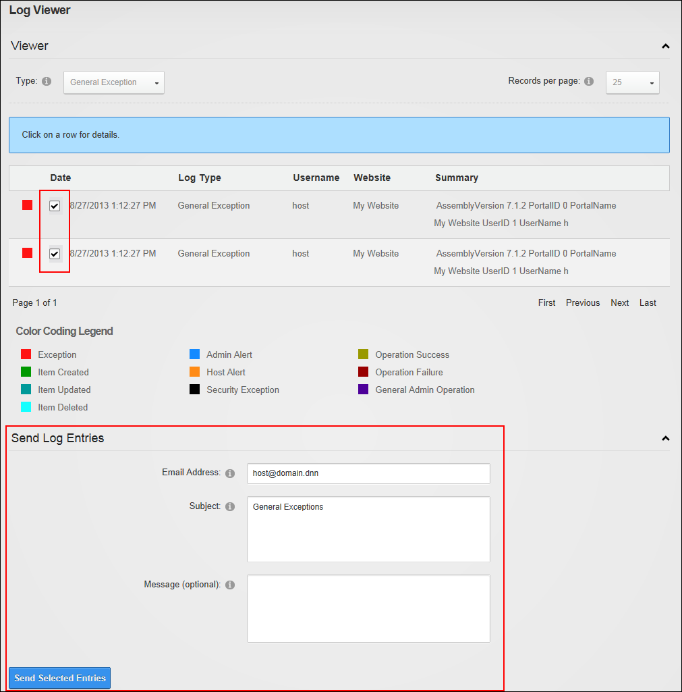
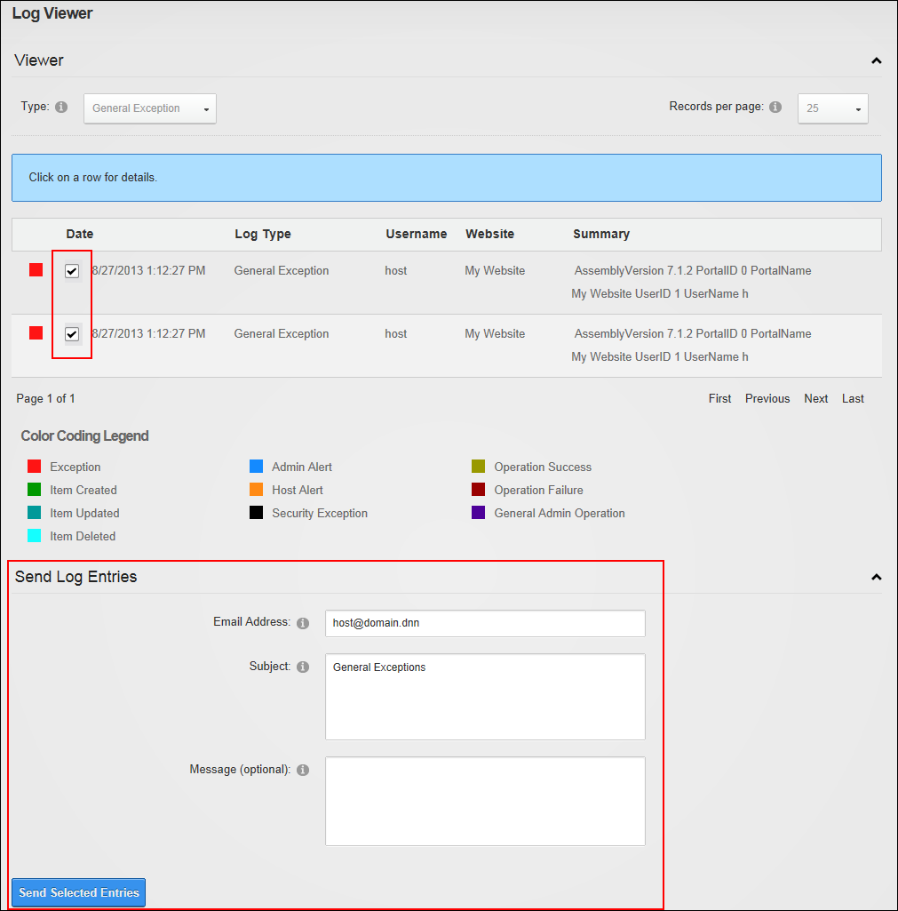

How to send one or more Log Viewer entries such via email. Important. You may be sending sensitive data over the Internet in clear text (not encrypted). Before sending your exception submission, please review the contents of your exception log to verify that no sensitive data is contained within it.
=======How to send one or more selection exception records via email using the Event Viewer module. Warning. You may be sending sensitive data over the Internet in clear text (not encrypted). Before sending your exception submission, please review the contents of your exception log to verify that no sensitive data is contained within it.
>>>>>>> 72_release
<<<<<<< HEAD
 =======

>>>>>>> 72_release
=======

>>>>>>> 72_release
Sending Exceptions by Email